Texto extraído da edição fornecida, sem atualização normativa. Consulte a página original para conferir tabelas, formulários e instruções ilustradas. A numeração dos links corresponde à página do arquivo PDF.
Apresentação
PDF · p. 1Esta página contém conteúdo gráfico. Consulte a reprodução original abaixo.
Ver página original — tabelas, imagens e diagramas
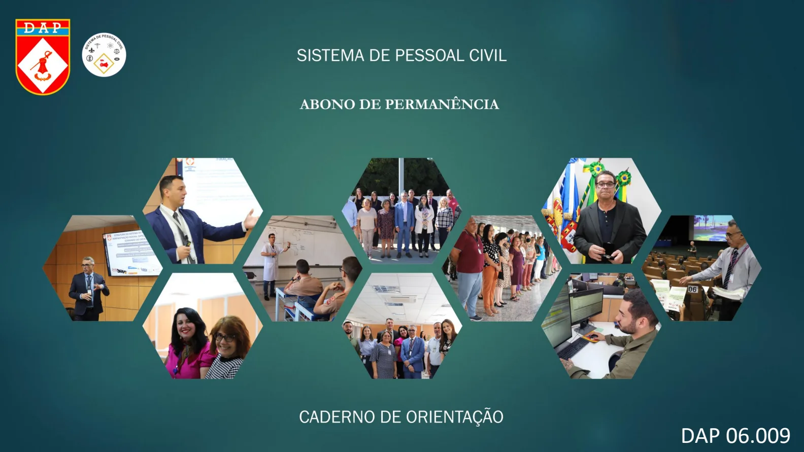
Legislação básica
PDF · p. 21. Legislação Básica
É dever do servidor, da Organização Militar (OM) e da Região Militar (RM) ler e acompanhar a
atualização da legislação que se refere aos assuntos tratados neste Caderno de Orientação. 2
Emenda
Constitucional nº
20, de 15 de
dezembro de 1998
Emenda
Constitucional nº
41, de 19 de
dezembro de 2003
Emenda
Constitucional nº
103, de 12 de
novembro de 2019
Lei nº 10.887, de 18
de junho de 2004
Atos normativos do órgão
central do SIPEC
Ver página original — tabelas, imagens e diagramas
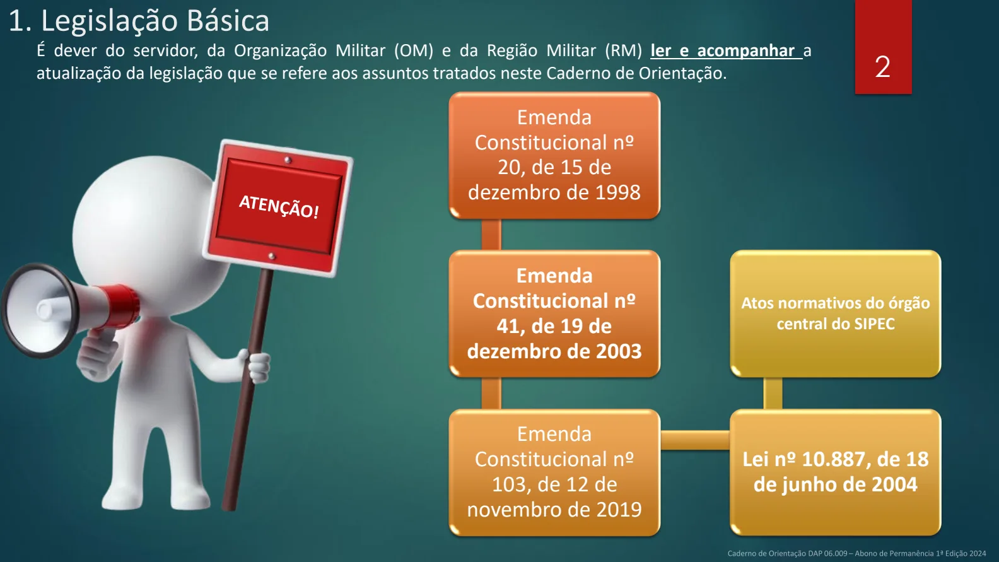
Legislação básica
PDF · p. 31. Legislação Básica
3
Referência Título/Assunto
Emenda Constitucional nº 20, de 15
de dezembro de 1998
Modifica o sistema de previdência social, estabelece
normas de transição e dá outras providências.
Emenda Constitucional nº 41, de 19
de dezembro de 2003 Institui o abono de permanência.
Lei nº 10.887, de 18 de junho de
2004
Dispõe sobre a aplicação de disposições da Emenda
Constitucional nº 41, de 19 de dezembro de 2003,
altera dispositivos das Leis nºs 9.717, de 27 de
novembro de 1998, 8.213, de 24 de julho de 1991,
9.532, de 10 de dezembro de 1997, e dá outras
providências.
Orientação Normativa MP/SRH nº 6,
de 13 de outubro de 2008
Estabelece orientação quanto à aplicação das regras
de abono de permanência a professor na educação
infantil e no ensino fundamental e médio.
Emenda Constitucional nº 103, de
12 de novembro de 2019
Altera o sistema de previdência social e estabelece
regras de transição e disposições transitórias.
Ver página original — tabelas, imagens e diagramas
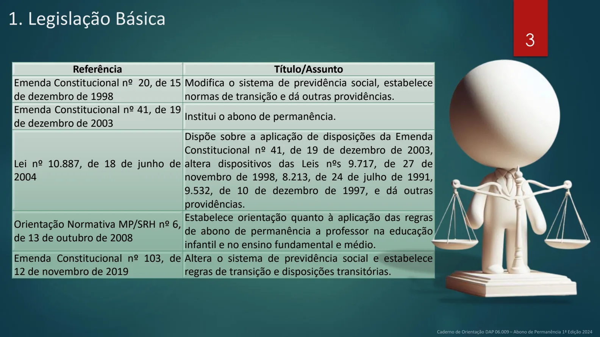
Conceito
PDF · p. 4O abono de permanência é um benefício pecuniário
concedido ao servidor ativo, no valor equivalente à sua
contribuição previdenciária, que opte por permanecer em
atividade após ter cumprido todos os requisitos para
aposentadoria voluntária, até completar os requisitos para a
aposentadoria compulsória.
4
2. Conceitos
Ver página original — tabelas, imagens e diagramas
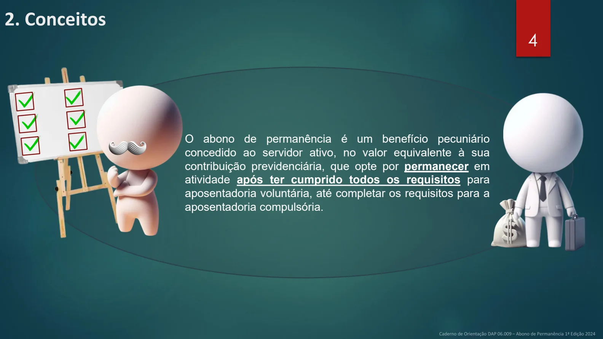
Requisitos básicos
PDF · p. 53. REQUISITOS BÁSICOS
Ser servidor público efetivo que
contribua para o Regime Próprio de
Previdência Social – RPPS; e
atender aos requisitos para ser enquadrado
em algum fundamento constitucional de
aposentadoria voluntária, com exceção da
aposentadoria por idade e compulsória.
Ver página original — tabelas, imagens e diagramas
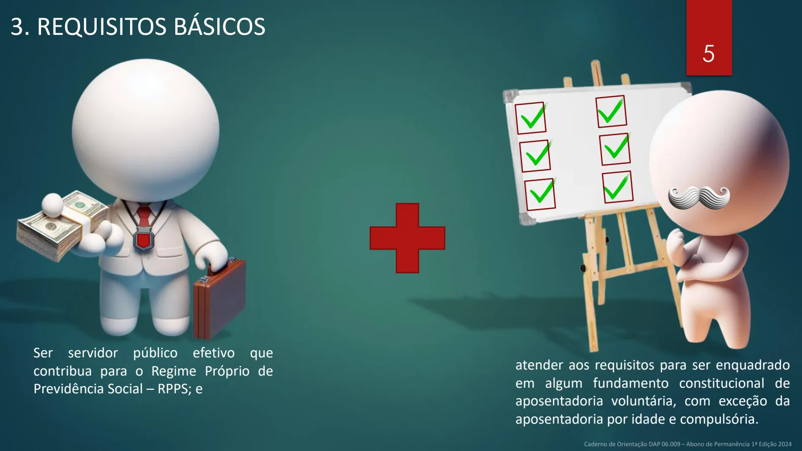
Informações gerais
PDF · p. 64. INFORMAÇÕES GERAIS
f) O servidor da carreira de Magistério que preencher todos os requisitos para aposentadoria
voluntária, com amparo no art. 2º, incisos I, II e III, letras “a” e “b”, § 1º, incisos I ou II e § 4º , da
EC nº 41/03, e optar por permanecer em atividade, fará jus ao abono de permanência de acordo
com o art. 2º, § 4º e 5º , da EC nº 41/03.
g) O servidor da carreira de Magistério que preencheu todos os requisitos para aposentadoria
voluntária, até 30 dezembro de 2003, e que optar por permanecer em atividade, fará jus ao
abono de permanência de acordo com o art. 3º, § 1º, da Emenda Constitucional nº 41/03.
h) A redução constitucional de cinco anos no requisito da idade e do tempo de contribuição para
aposentadoria concedida ao professor que comprove exclusivamente tempo de efetivo exercício
das funções de magistério na educação infantil e no ensino fundamental e médio, somente se
presta para efeito de aposentadoria, não se aplicando tal redução para a concessão de abono de
permanência, haja vista inexistir fundamento na referida norma para a concessão de abono de
permanência mediante a utilização da redução do tempo de contribuição e idade permitidas para
a aposentadoria.
a) Os períodos de licença-prêmio por assiduidade adquiridos na forma da Lei nº 8.112/90, até 15 de outubro de 1996, poderão
ser computados em dobro para aposentadoria e, em consequência, para abono de permanência.
b) A utilização da licença-prêmio computada em dobro para efeito de abono de permanência, impede o gozo da licença por parte
do servidor.
c) Quando se tratar de processo de abono de professores, será exigida a comprovação do tempo de serviço exercido
exclusivamente na atividade de magistério.
d) O servidor que preencheu todos os requisitos para aposentadoria voluntária integral ou proporcional, até 30 de dezembro de
2003, e que optar por permanecer em atividade, fará jus ao abono de permanência de acordo com o art. 3º, § 1º, da Emenda
Constitucional nº 41/03, a contar de 31 dezembro de 2003.
e) O servidor que preencher todos os requisitos para aposentadoria com o amparo no art. 2º, da EC nº 41/03, de 19 dezembro de
2003, e optar por permanecer em atividade, fará jus ao abono de permanência de acordo com o art. 2º, § 5º , da Emenda
Constitucional nº 41/03.
Ver página original — tabelas, imagens e diagramas
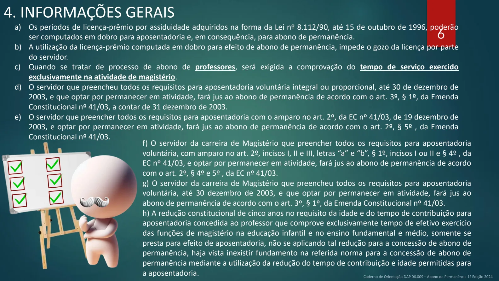
Documentos necessários
PDF · p. 75. DOCUMENTOS NECESSÁRIOS
DOCUMENTO ANEXO OBSERVAÇÃO RESPONSÁVEL PELA
ELABORAÇÃO/EMISSÃO/FORNECIMENTO
Requerimento - Elaboração descrita no item 5.1 Servidor interessado
Informação - Elaboração descrita no item 5.1 OM
Cópia do RG - - Servidor interessado
Cópia da Certidão de Tempo de
Contribuição emitida pelo INSS
a) Se ingressou no serviço público antes da
Lei nº 8.112/90, de 11 de dezembro de
1990;
b) Se exerceu outra atividade trabalho, cuja
contribuição previdenciária se deu no
Regime Geral de Previdência Social –
RGPS, ou seja, perante o INSS (ex:
empresa pública, empresa privada, etc.)
Servidor interessado
Cópia da Certidão de Tempo de
Contribuição – CTC de atividade no
serviço público
Se após a Lei 8.112/90, de 11 de dezembro
de 1990, trabalhou em algum órgão ou
entidade pública federal e a contribuição
previdenciária se deu no Regime Próprio de
Previdência Social – RPPS.
Servidor interessado
Mapa de tempo de serviço Anexo A - OM
Quadro demonstrativo de licenças,
suspensões e faltas, com
fundamento
Anexo B - OM
Ver página original — tabelas, imagens e diagramas
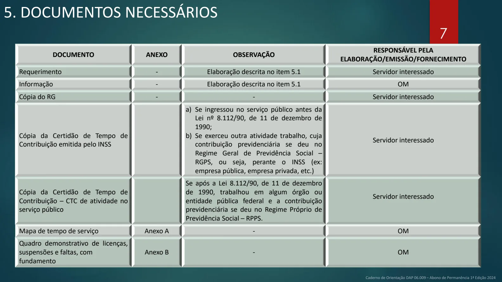
Documentos necessários
PDF · p. 885.1. REDIGINDO OS DOCUMENTOS NO SPED (Requerimento e Informação)
1
2
4
5
Requerimento Informação
3
6
Ver página original — tabelas, imagens e diagramas
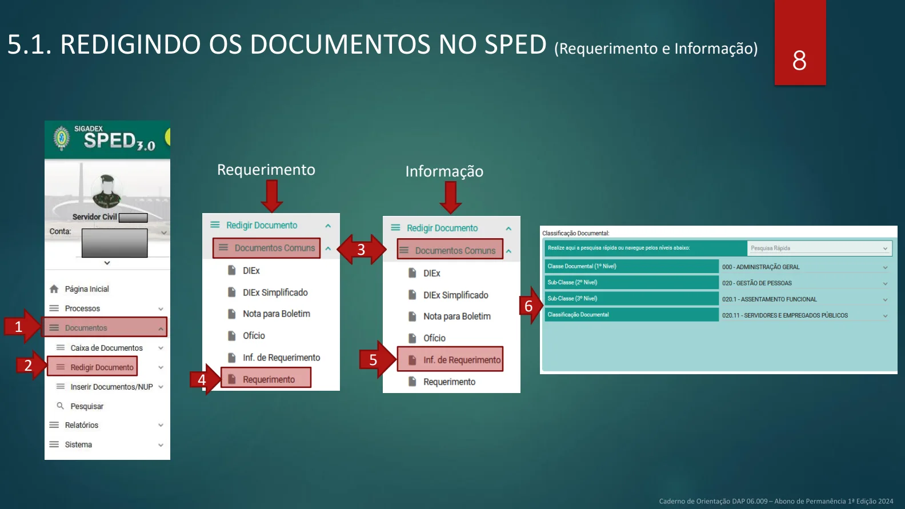
Tramitação
PDF · p. 96. TRAMITAÇÃO
SERVIDOR
• Observar o
cumprimento
dos requisitos
legais que o
habilita para o
abono de
permanência.
• Fazer o
requerimento e
instruir o
processo com os
documentos
prescritos no
item 5 deste
caderno de
orientação.
OM
• Após o
recebimento
de solicitação
do abono de
permanência,
elaborar a
informação
do
requerimento
e enviar o
processo à
RM.
RM
• Conferir o
processo e
encaminhá-lo
para a
DAP/SPC.
DAP/SPC
• Analisar o
processo.
• No caso de
DEFERIMENTO,
elaborar e
publicar a
portaria no Adt
DAP ao Boletim
Interno do DGP .
• No caso de
indeferimento,
elaborar e
publicar o
despacho no Adt
DAP ao Boletim
Interno do DGP .
• Arquivar o
processo.
OM
• Acompanhar a
publicação da
decisão no
Boletim Interno
do DGP e, em
caso de
deferimento,
implantar o
abono no SIAPE,
nos termos do
Tutorial de
Lançamento de
Abono de
Permanência no
Sistema
SIAPENET
(Anexo C)
Informação
Ver página original — tabelas, imagens e diagramas
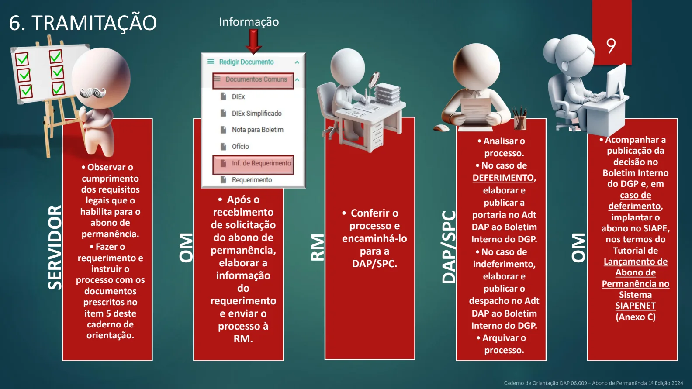
Fundamentos anteriores à EC 103/2019
PDF · p. 107. FUNDAMENTOS PARA O ABONO DE PERMANÊNCIA ANTES DA EC
103/2019
7.1. DIREITO ADQUIRIDO: Regras aplicáveis ao servidor que preencheu todas as condições para
aposentadoria até 31 DEZ 03:
TIPO APOSENTADORIA VOLUNTÁRIA INTEGRAL
Fundamento do abono Art. 3º, § 1º, da EC nº 41, de 19 DEZ 03, combinado com o art. 40, § 1º, inciso III,
“a”,da CF, com a redação dada pela EC 20/98.
HOMEM MULHER
Tempo de contribuição 12.775 dias 35 anos 10.950 dias 30 anos
Tempo no serviço público 3.650 dias 10 anos 3.650 dias 10 anos
Tempo no cargo: 1.825 dias 5 anos 1.825 dias 5 anos
Idade mínima: 60 anos 55 anos
TIPO APOSENTADORIA VOLUNTÁRIA PROPORCIONAL POR IDADE
Fundamento do abono Art. 3º, § 1º, da EC nº 41, de 19 DEZ 03, combinado com o art. 40, § 1º, inciso III,
“a”,da CF, com a redação dada pela EC 20/98.
HOMEM MULHER
Tempo no serviço público 3.650 dias 10 anos 3.650 dias 10 anos
Tempo no cargo: 1.825 dias 5 anos 1.825 dias 5 anos
Idade mínima: 65 anos 60 anos
Tempo de contribuição
mínimo 10.950 dias 30 anos 9.125 dias 25 anos
Ver página original — tabelas, imagens e diagramas
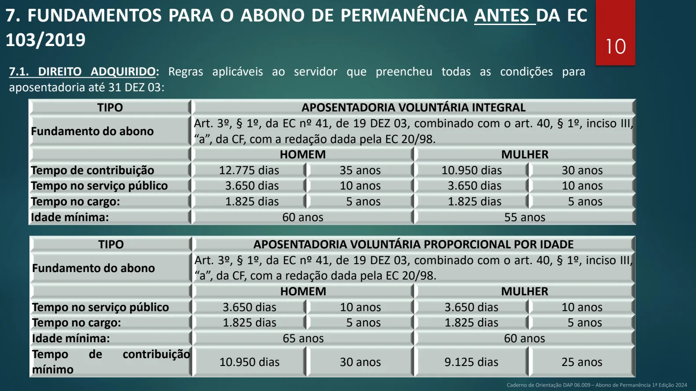
Fundamentos anteriores à EC 103/2019
PDF · p. 117.1. DIREITO ADQUIRIDO: Regras aplicáveis ao servidor que preencheu todas as condições para
aposentadoria até 31 DEZ 03 (cont.):
TIPO APOSENTADORIA VOLUNTÁRIA PROPORCIONAL - REGRA DE TRANSIÇÃO
Fundamento do abono Art. 3º, § 1º, da EC nº 41, de 19 DEZ 03, combinado com o art. 8º, § 1º, da EC nº
20, de 15 DEZ 98.
HOMEM MULHER
Tempo de contribuição 10.950 dias 30 anos 9.125 dias 25 anos
Tempo no cargo: 1.825 dias 5 anos 1.825 dias 5 anos
Idade mínima: 53 anos 48 anos
Pedágio Acréscimo de 40% no tempo que faltava, em 16 DEZ 98, para atingir o total.
TIPO APOSENTADORIA VOLUNTÁRIA INTEGRAL - REGRA DE TRANSIÇÃO
Fundamento do abono Art. 3º, § 1º, da EC nº 41, de 19 DEZ 03, combinado com o art. 8º, § 1º, da EC nº
20, de 15 DEZ 98.
HOMEM MULHER
Tempo de contribuição 12.775 dias 35 anos 10.950 dias 30 anos
Tempo no cargo: 1.825 dias 5 anos 1.825 dias 5 anos
Idade mínima: 53 anos 48 anos
Pedágio Acréscimo de 20% no tempo que faltava, em 16 DEZ 98, para atingir o total.
7. FUNDAMENTOS PARA O ABONO DE PERMANÊNCIA ANTES DA EC
103/2019
Ver página original — tabelas, imagens e diagramas
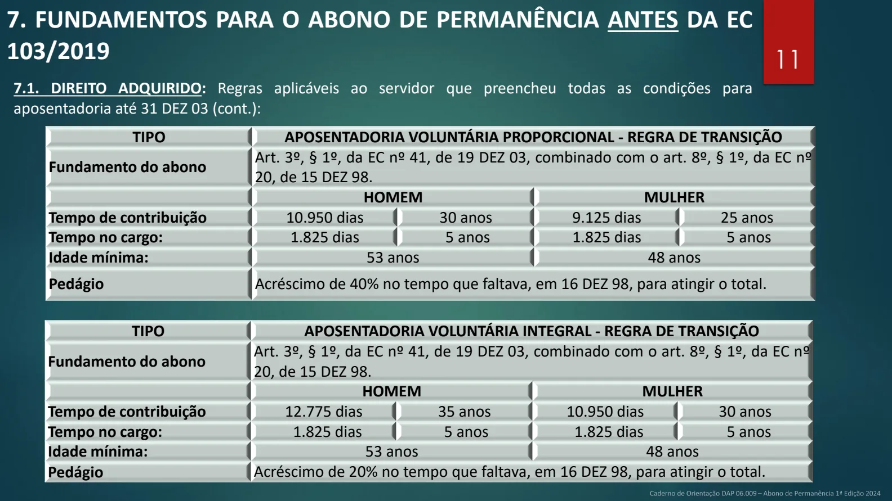
Fundamentos anteriores à EC 103/2019
PDF · p. 127.2. REGRA PERMANENTE: Aplicável ao servidor que ingressou no serviço público a partir de 31 DEZ 03 ou
àquele que não optou pelas regras dos art. 2º e 6º, da EC 41/03:
TIPO APOSENTADORIA VOLUNTÁRIA
Fundamento do abono Art. 40, §§ 1º, inciso III, “a”, e 19, da CF, com redação dada pela EC nº 41/03.
HOMEM MULHER
Tempo de contribuição 12.775 dias 35 anos 10.950 dias 30 anos
Tempo no serviço público 3.650 dias 10 anos 3.650 dias 10 anos
Tempo no cargo: 1.825 dias 5 anos 1.825 dias 5 anos
Idade mínima: 60 anos 55 anos
7.3. REGRA DE TRANSIÇÃO: Aplicável aos servidores titulares de cargo efetivo que tenham ingressado no serviço público até
16 Dez 98:
TIPO APOSENTADORIA VOLUNTÁRIA
Fundamento do abono Art. 2º, § 5º, da EC nº 41, de 19 DEZ 03.
HOMEM MULHER
Tempo de contribuição 12.775 dias 35 anos 10.950 dias 30 anos
Tempo no cargo 1.825 dias 5 anos 1.825 dias 5 anos
Idade mínima: 53 anos 48 anos
Pedágio Acréscimo de 20% no tempo que faltava, em 16 DEZ 98, para atingir o tempo
total.
7. FUNDAMENTOS PARA O ABONO DE PERMANÊNCIA ANTES DA EC
103/2019
Ver página original — tabelas, imagens e diagramas
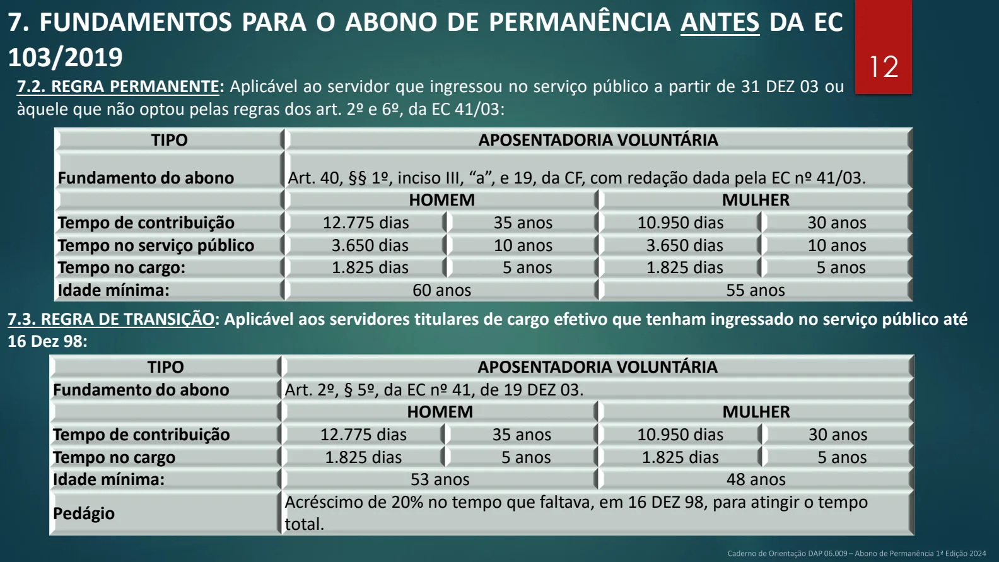
Fundamentos anteriores à EC 103/2019
PDF · p. 137. FUNDAMENTOS PARA O ABONO DE PERMANÊNCIA ANTES DA EC
103/2019
7.4. PROFESSORES DE ENSINO MÉDIO E FUNDAMENTAL
7.4.1. DIREITO ADQUIRIDO: Regras aplicáveis ao servidor titular de cargo efetivo que preencheu todas as condições
estabelecidas para aposentadoria até 31 DEZ 03:
TIPO APOSENTADORIA VOLUNTÁRIA INTEGRAL - REGRA DE TRANSIÇÃO
Fundamento do abono Art 3º, § 1º da EC nº 41 de 19 DEZ 03, combinado com o art. 8º, caput, e § 4º da
EC nº 20, de 15 DEZ 98.
PROFESSOR PROFESSORA
Tempo de contribuição 12.775 dias 35 anos 10.950 dias 30 anos
Tempo no serviço público: - - - -
Tempo no cargo: 1.825 dias 5 anos 1.825 dias 5 anos
Idade mínima: 53 anos 48 anos
Regra especial Acréscimo de 17% no tempo exercido
até 16 DEZ 98.
Acréscimo de 20% no tempo exercido
até 16 DEZ 98.
Pedágio Acréscimo de 20% no tempo que faltava, em 16 DEZ 98, para atingir o tempo
total.
Ver página original — tabelas, imagens e diagramas
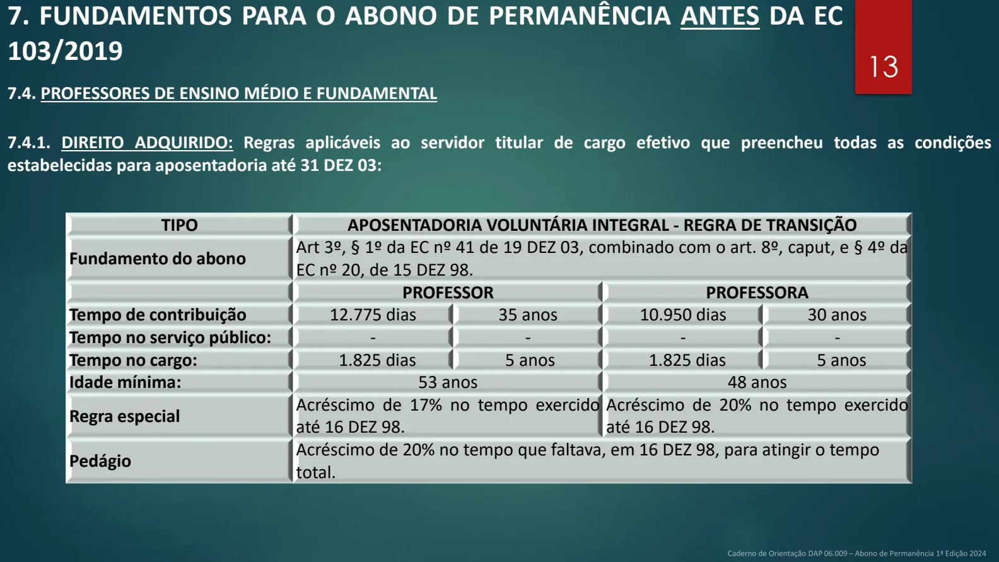
Fundamentos anteriores à EC 103/2019
PDF · p. 147. FUNDAMENTOS PARA O ABONO DE PERMANÊNCIA ANTES DA EC
103/2019
7.4. PROFESSORES DE ENSINO MÉDIO E FUNDAMENTAL
7.4.2. REGRA DE TRANSIÇÃO: Aplicável aos servidores titulares de cargo efetivo que tenham ingressado no serviço público até
16 DEZ 98:
TIPO APOSENTADORIA VOLUNTÁRIA
Fundamento do abono Art. 2º, § 5º, da EC nº 41, de 19 DEZ 03.
PROFESSOR PROFESSORA
Tempo de contribuição 12.775 dias 35anos 10.950 dias 30anos
Tempo no cargo: 1.825 dias 5anos 1825 dias 5anos
Idade mínima: 53 anos 48 anos
Regra especial 1 Acréscimo de 17% no tempo exercido
até 16 DEZ 98.
Acréscimo de 20% no tempo exercido
até 16 DEZ 98.
Pedágio Acréscimo de 20% no tempo que faltava, em 16 DEZ 98, para atingir o total.
Ver página original — tabelas, imagens e diagramas
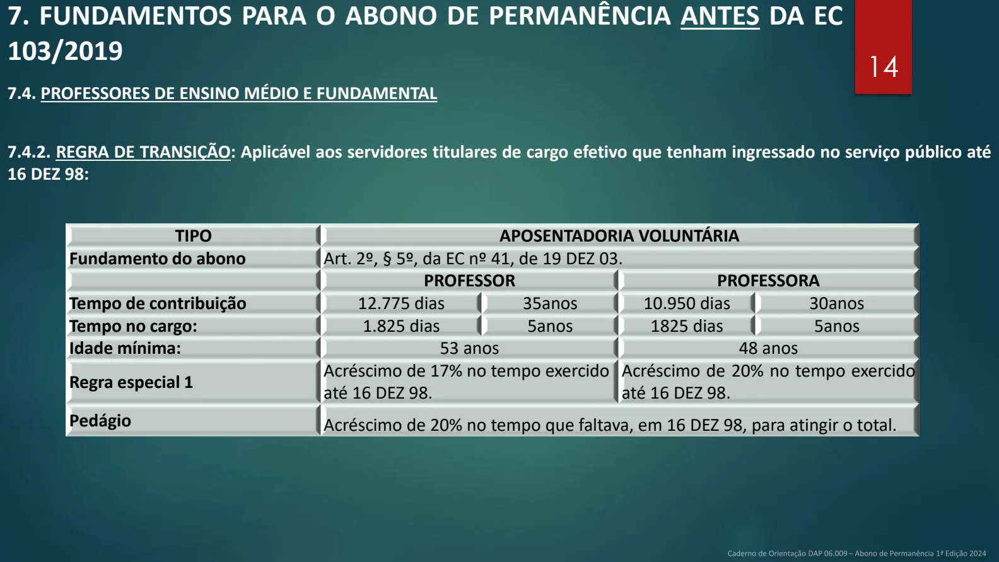
Fundamentos após a EC 103/2019
PDF · p. 158. FUNDAMENTOS PARA O ABONO DE PERMANÊNCIA DEPOIS DA EC
103/2019
TIPO APOSENTADORIA VOLUNTÁRIA INTEGRAL
Fundamento do abono Art. 4, § 6º, inciso II, da EC nº 103, de 12 NOV 2019, combinado com o art. 8º
com a redação dada pela referida emenda.
HOMEM MULHER
Tempo de contribuição 12.775 dias 35 anos 10.950 dias 30 anos
Tempo no serviço público 7.300 dias 20 anos 7.300 dias 20 anos
Tempo no cargo: 1.825 dias 5 anos 1.825 dias 5 anos
Idade mínima: 62 anos 57 anos
Pontos A somatória da idade e do tempo de contribuição, incluídas as frações, equivale
86 (oitenta e seis) pontos, se mulher, e 96 (noventa e seis) pontos, se homem.
TIPO APOSENTADORIA VOLUNTÁRIA
Fundamento do abono Art. 10, § 1º, I, “a” e “b” da EC nº 103, de 12 NOV 2019.
HOMEM MULHER
Idade mínima: 65 anos 62 anos
Tempo de contribuição 25 anos
Tempo de serviço público 10 anos
8.1. Regras estabelecidas pela Emenda Constitucional nº 103, de 12 NOV 2019:
Ver página original — tabelas, imagens e diagramas
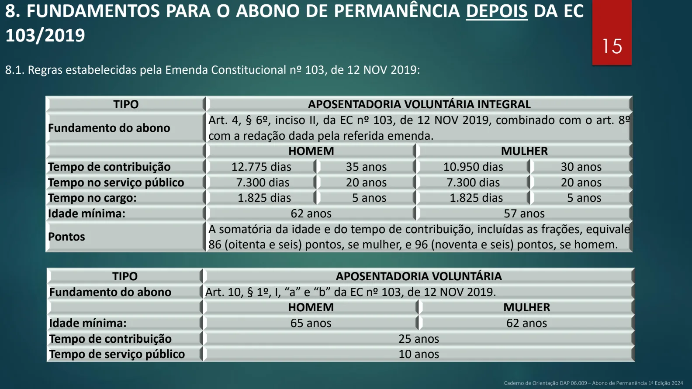
Fundamentos após a EC 103/2019
PDF · p. 168. FUNDAMENTOS PARA O ABONO DE PERMANÊNCIA DEPOIS DA EC
103/2019
TIPO APOSENTADORIA ESPECIAL
Fundamento do abono Art. 10, § 2º, II da EC nº 103, de 12 NOV 2019.
HOMEM / MULHER
Tempo de contribuição: 25 anos de efetiva exposição
Tempo no serviço público: 10 anos
Tempo no cargo: 5 anos
Idade mínima: 60 anos
TIPO APOSENTADORIA VOLUNTÁRIA
Fundamento do abono Art. 20, I a IV, da EC nº 103, de 12 NOV 2019
HOMEM MULHER
Idade mínima 60 anos 57 anos
Tempo de contribuição: 35 anos 30 anos
Tempo no cargo: 5 anos
Tempo no serviço público: 20 anos
Pedágio 100% sobre o tempo de contribuição que faltaria para atingir o tempo mínimo
de contribuição previsto para o cargo.
8.1. Regras estabelecidas pela Emenda Constitucional nº 103, de 12 NOV 2019 (cont.):
Ver página original — tabelas, imagens e diagramas
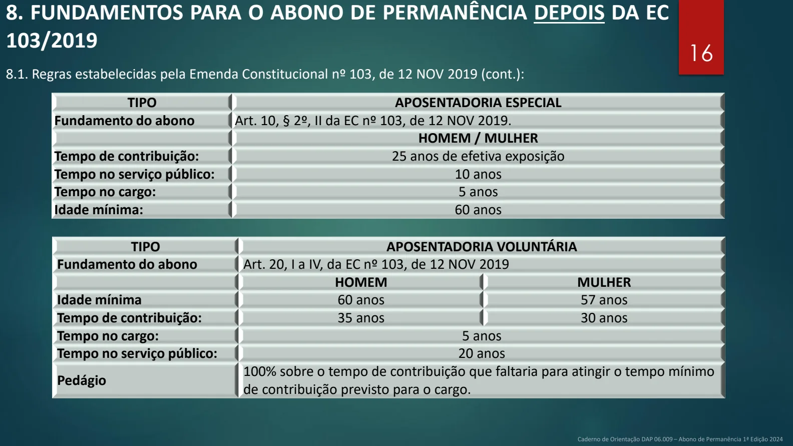
Fundamentos após a EC 103/2019
PDF · p. 178. FUNDAMENTOS PARA O ABONO DE PERMANÊNCIA DEPOIS DA EC
103/2019
TIPO APOSENTADORIA DA PESSOA COM DEFICIÊNCIA
Fundamento do abono Art. 22, § único, da EC nº 103, de 12 NOV 2019, com concessão dada
pela Lei Complementar nº 142, de 8 MAIO 2013.
HOMEM MULHER
Tempo de contribuição + grau da
deficiência:
25 anos (deficiência grave) 20 anos (deficiência grave)
29 anos (deficiência moderada) 24 anos (deficiência moderada)
33 anos (deficiência leve) 28 anos (deficiência leve)
Tempo no serviço público: 10 anos
Tempo no cargo: 5 anos
Idade mínima
(15 anos de tempo mínimo de
contribuição):
60 anos 55 anos
8.1. Regras estabelecidas pela Emenda Constitucional nº 103, de 12 NOV 2019 (cont.):
Ver página original — tabelas, imagens e diagramas
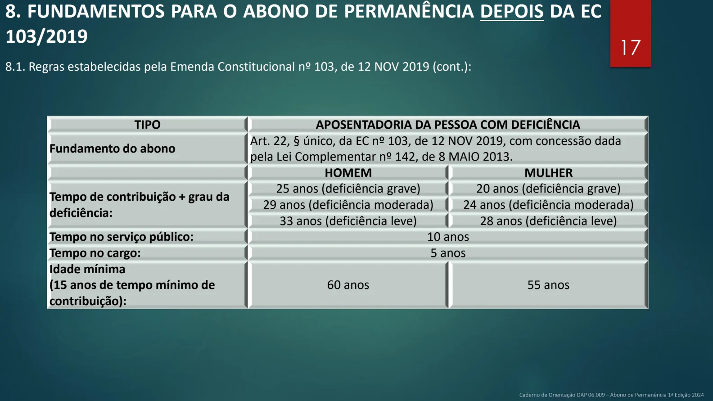
Fundamentos após a EC 103/2019
PDF · p. 188. FUNDAMENTOS PARA O ABONO DE PERMANÊNCIA DEPOIS DA EC
103/2019
TIPO APOSENTADORIA ESPECIAL
Fundamento do abono
Art. 21, III, da EC nº 103, de 12 NOV
2019, combinado com o art. 8º com a
redação dada pela referida emenda.
HOMEM / MULHER
Tempo no serviço público 20 anos
Tempo no cargo: 5 anos
Pontos: Idade + tempo de contribuição: Exposição
86 pontos 25 anos
8.1. Regras estabelecidas pela Emenda Constitucional nº 103, de 12 NOV 2019 (cont.):
Ver página original — tabelas, imagens e diagramas
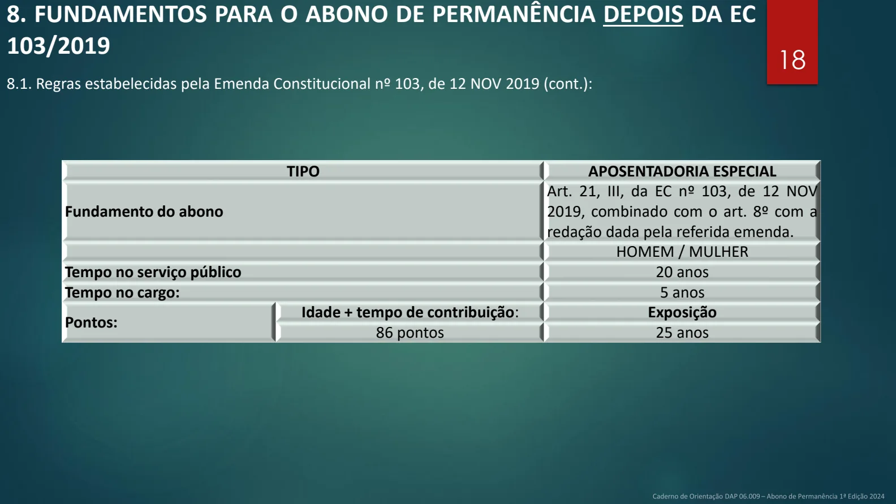
Fundamentos após a EC 103/2019
PDF · p. 198. FUNDAMENTOS PARA O ABONO DE PERMANÊNCIA DEPOIS DA EC
103/2019
8.2. Regra para a concessão do abono de permanência aos professores da educação infantil, de ensino médio e fundamental:
TIPO APOSENTADORIA VOLUNTÁRIA MAGISTÉRIO
Fundamento do abono: Art 4, §§ 4º, I, II, III e IV e 5º, da EC 103, de 12 NOV 2019, combinado com o art. 8º
com a redação dada pela referida emenda.
Requisitos Ano Professor Professora
Idade mínima 2019 56 anos 51 anos
2022 57 anos 52 anos
Tempo de contribuição - 30 anos 25 anos
Pontos (Idade + tempo de
contribuição)
2019 91 81
2022 94 84
Tempo no serviço público 20 anos
Tempo no cargo: 5 anos
Ver página original — tabelas, imagens e diagramas
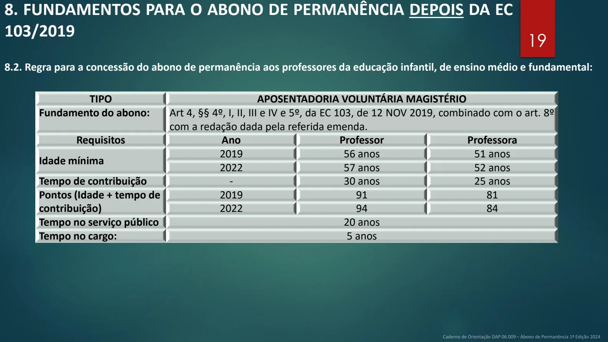
Fundamentos após a EC 103/2019
PDF · p. 208. FUNDAMENTOS PARA O ABONO DE PERMANÊNCIA DEPOIS DA EC
103/2019
8.2. Regra para a concessão do abono de permanência aos professores da educação infantil, de ensino médio e fundamental
(cont.):
TIPO APOSENTADORIA VOLUNTÁRIA
Fundamento do abono Art 10, § 2º, III da EC nº 103, de 12 NOV 2019.
PROFESSOR PROFESSORA
Idade mínima: 60 anos 57 anos
Tempo de contribuição 25 anos
Tempo no serviço público: 10 anos
Tempo no cargo: 5 anos
TIPO APOSENTADORIA VOLUNTÁRIA
Fundamento do abono Art 20, § 1º, da EC 103, de 12 NOV 2019
PROFESSOR PROFESSORA
Tempo de contribuição 30 anos 25 anos
Tempo no cargo: 5 anos
Tempo no serviço público 20 anos
Idade mínima: 55 anos 52 anos
Pedágio 100% sobre o tempo de contribuição que faltaria para atingir o tempo mínimo
de contribuição previsto para o cargo.
Ver página original — tabelas, imagens e diagramas
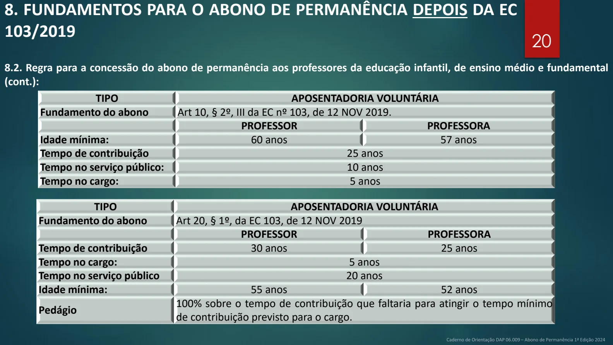
Fontes e elaboração
PDF · p. 21ELABORAÇÃO:
ASSESSORIA TÉCNICA DA SPC/DAP
SUBSEÇÃO DE BENEFÍCIOS DA SPC/DAP
OUTUBRO DE 2024
Para conhecer melhor o assunto, leia as
legislações indicadas no início deste caderno, disponíveis no link:
https://legis.sigepe.gov.br/legis/pesquisa-avancada
Ver página original — tabelas, imagens e diagramas
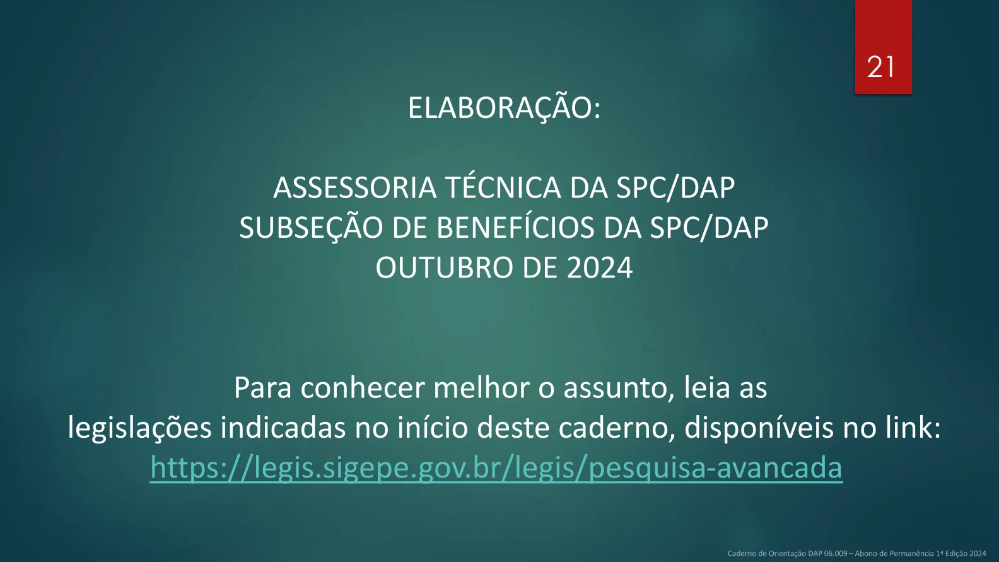
Anexos e mapa de tempo de serviço
PDF · p. 22ANEXOS
ANEXO A
Mapa de Tempo de Serviço
MINISTÉRIO DA DEFESA
EXÉRCITO BRASILEIRO
(escalões hierárquicos até a OM expedidora)
(Denominação histórica)
MAPA DE TEMPO DE SERVIÇO 1 FOLHA 1
1 I D E N T I F I C A Ç Ã O
Nome: Idade
CPF: Matrícula SIAPE:
Cargo
OM de Lotação OM Vinculação
2 AVERBAÇÕES ANTERIORES
PERÍODO DE 24/07/70 a 24/08/70
ANUÊNIOS
APOSENTADORIA
(anos) (meses) (dias) (anos) (meses) (dias)
3 TEMPO DE SERVIÇO NESTE ÓRGÃO
PERÍODO DE ___/____/______ a ___/____/______
ANUÊNIOS APOSENTADORIA NA CARREIRA NO CARGO
(anos) (meses) (dias) (anos) (meses) (dias) (anos) (meses) (dias) (anos) (meses) (dias)
4 Cond Insalub/Penosa até 11/12/90 - 20% (mulher) ou 40% (homem) sobre Tp Sv
APOSENTADORIA
(anos) (meses) (dias)
5 CONTAGEM DE TEMPO EM DOBRO
LPA NÃO GOZADA
PARA APOSENTADORIA
(anos) (meses) (dias) (anos) (meses) (dias)
6 ABONO PROFESSOR 17% (homem) ou 20% (mulher)
APOSENTADORIA
(anos) (meses) (dias)
7 TOTAL GERAL DE TEMPO DE SERVIÇO
ANUÊNIOS APOSENTADORIA (Abono) NO SERVIÇO PÚBLICO
(anos) (meses) (dias) (anos) (meses) (dias) (anos) (meses) (dias)
8 PEDÁGIO 20% (integral) ou 40% (proporcional) do tempo que faltava para aposentadoria em 16 DEZ
1998
TEMPO QUE FALTAVA PARA
APOSENTADORIA EM 16 DEZ 1998
ACRÉSCIMO DE TEMPO NECESSÁRIO PARA
APOSENTADORIA
Ver página original — tabelas, imagens e diagramas
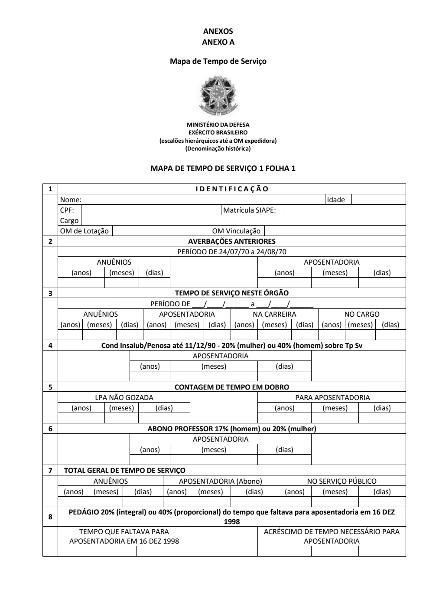
Anexos e mapa de tempo de serviço
PDF · p. 23MAPA DE TEMPO DE SERVIÇO - FOLHA 2
FREQUÊNCIA GERAL EM DIAS (RESUMO)
ANO
DEDUÇÕES
ANO
DEDUÇÕES
FALTAS E
SUSPENSÕES
LIC SEM
VENC
TEMPO
LÍQUIDO
FALTAS E
SUSPENSÕES
LIC SEM
VENC
TEMPO
LÍQUIDO
TOTAL
TEMPO DE SERVIÇO QTDE EM DIAS
AVERBAÇÕES ANTERIORES
NESTE ORGÃO
LPA EM DOBRO
ABONO PROFESSOR
COND INSALUB/PENSOSA
TOTAL DE TEMPO DE SERVIÇO
PEDÁGIO
LTS
Ver página original — tabelas, imagens e diagramas
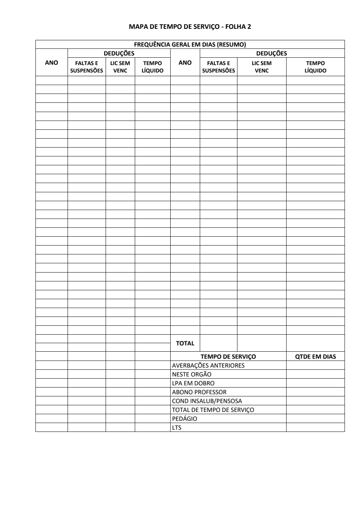
Anexos e mapa de tempo de serviço
PDF · p. 24MAPA DE TEMPO DE SERVIÇO - FOLHA 3
DETALHAMENTO DO TEMPO DE SERVIÇO AVERBADO
ÓRGÃO/ENTIDADE DATA DO
INGRESSO
DATA DA
DISPENSA REGIME TEMPO LÍQUIDO
TOTAL
LICENÇA-PRÊMIO POR ASSIDUIDADE
DATA DO INÍCIO DATA DE TÉRMINO TEMPO DE LIC
DEVIDA
TEMPO DE LIC
NÃO
USUFRUÍDA
TEMPO DE LIC
CONTADO EM
DOBRO
TOTAL
DETALHAMENTO DO TEMPO PRESTADO EM CARGO EM COMISSÃO OU FUNÇÃO DE CONFIANÇA (DAS - CD -
FG - FCT - REPRESENTAÇÃO DE GABINETE)
DENOMINAÇÃO
NOMEAÇÃO/DESIGNAÇÃO EXONERAÇÃO/DISPENSA TEMPO LÍQUIDO
EM DIAS ATO DATA DATA
EXERC ATO DATA VIGÊNCIA
TOTAL
DETALHAMENTO DO TEMPO PRESTADO EM CONDIÇÕES INSALUBRES, PENOSAS OU PERIGOSAS
DESIGNAÇÃO DISPENSA
ÓRGÃO ATO DATA VIGÊNCIA ATO DATA VIGÊNCIA TEMPO LÍQUIDO
EM DIAS
TOTAL
_______________________________________
Local e data
______________________________________ __________________________________
ENCARREGADO (A) DE PESSOAL CIVIL COMANDANTE / DIRETOR / CHEFE
Ver página original — tabelas, imagens e diagramas
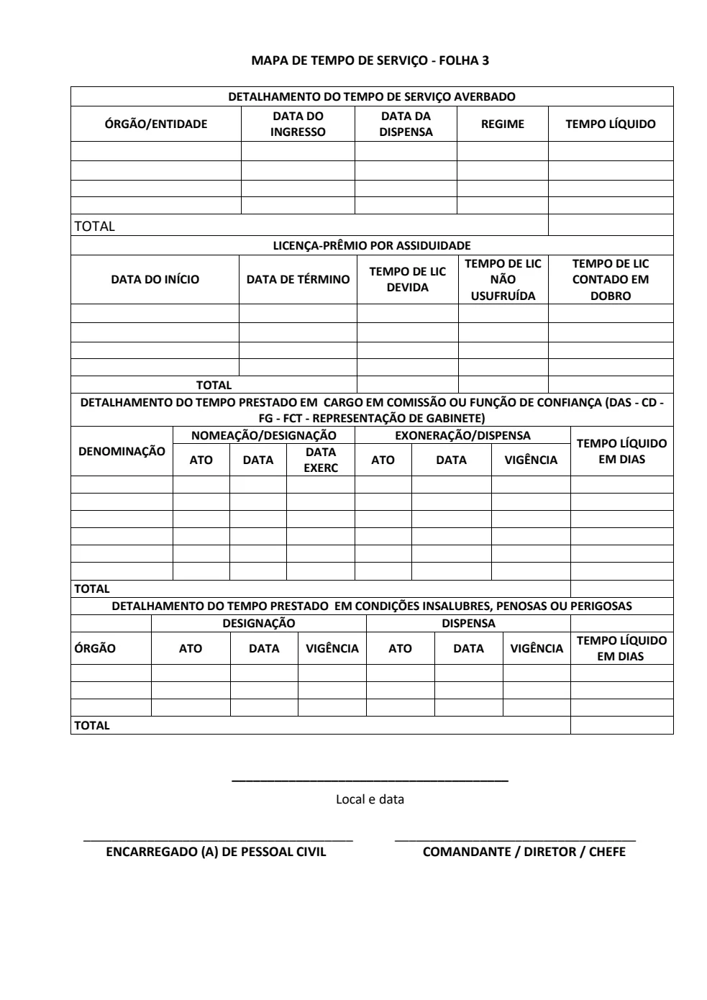
Anexos e mapa de tempo de serviço
PDF · p. 25ANEXO B
Quadro Demonstrativo de Licenças, Suspensões e Faltas
MINISTÉRIO DA DEFESA
EXÉRCITO BRASILEIRO
(escalões hierárquicos até a OM expedidora)
(Denominação histórica)
QUADRO DEMONSTRATIVO DE LICENÇAS, SUSPENSÕES E FALTAS
NOME DO SERVIDOR
DISCRIMINAÇÃO DAS LICENÇAS, SUSPENSÕES, FALTAS E FUNDAMENTO LEGAL
ANO DIAS LICENÇAS,
SUSPENSÕES, FALTAS PERÍODO FUNDAMENTO
LEGAL
(Local e data)
______________________________________ __________________________________
ENCARREGADO (A) DE PESSOAL CIVIL COMANDANTE / DIRETOR / CHEFE
Ver página original — tabelas, imagens e diagramas
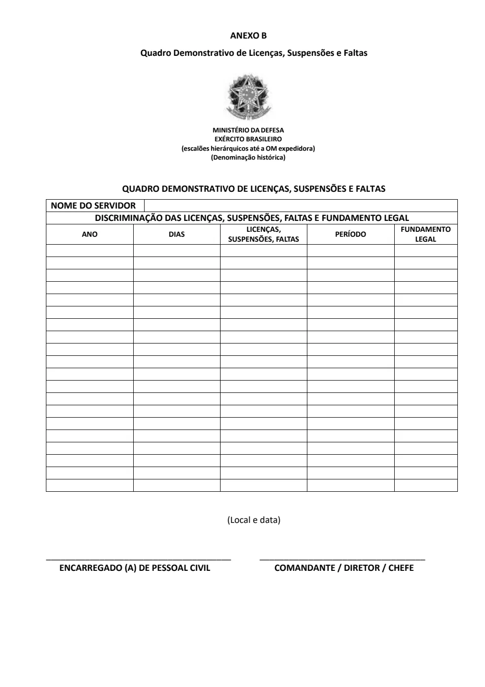
Tutorial de lançamento — anexo do caderno
PDF · p. 26ANEXO C
TUTORIAL - LANÇAMENTO DE ABONO DE PERMANÊNCIA NO SISTEMA
SIAPENET
SOBRE O ABONO:
✓ O abono de permanência é um benefício pecuniário concedido ao servidor ativo, no valor
equivalente à sua contribuição previdenciária, que opte por permanecer em atividade após ter
cumprido todos os requisitos para aposentadoria voluntária, até completar os requisitos para a
aposentadoria compulsória.
REQUISITOS PARA A UTILIZAÇÃO DO SERVIÇO:
✓ Que contribuam para o Regime Próprio de Previdência Social – RPPS;
✓ Que se enquadrem em algum fundamento constitucional de aposentadoria voluntária, com
exceção da aposentadoria por idade e compulsória;
✓ Que optem, via requerimento, por permanecer em atividade.
LEGISLAÇÃO:
✓ Art. 3° § 3° da EC 103/2019, de 13 de novembro de 2019;
✓ Art. 8º da EC 103/2019, de 13 de novembro de 2019;
✓ Art. 10 § 5° da EC 103/2019, de 13 de novembro de 2019;
✓ Emenda Constitucional n° 103, de 2019. Disponível em; e
✓ https://www.planalto.gov.br/ccivil_03/constituicao/emendas/emc/emc103.htm
ACESSO PARA OS SISTEMAS:
✓ É necessário que o operador tenha acesso aos sistemas SIAPE e SIGEPE para operacionalizar os
sistemas apresentados neste tutorial.
1º Passo: entrar no sistema SIAPENET (https://www.siapenet.gov.br/Portal/Servico/Apresentacao.asp ).
• Clicar na opção Órgão:
Ver página original — tabelas, imagens e diagramas
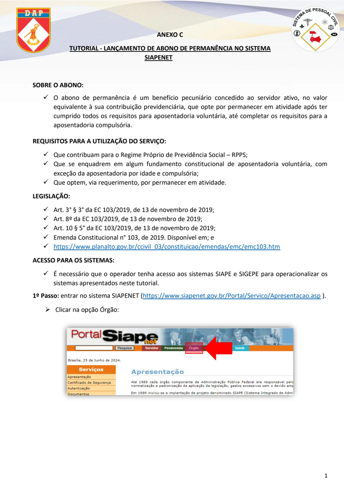
Tutorial de lançamento — anexo do caderno
PDF · p. 272º Passo: acessar com o certificado digital.
• O operador deverá acessar o portal por meio do certificado digital:
3º Passo: página inicial do SIAPENET.
• Para acessar a “Tela Preta”, acessar o ícone “Acesso SIAPE”:
Ver página original — tabelas, imagens e diagramas
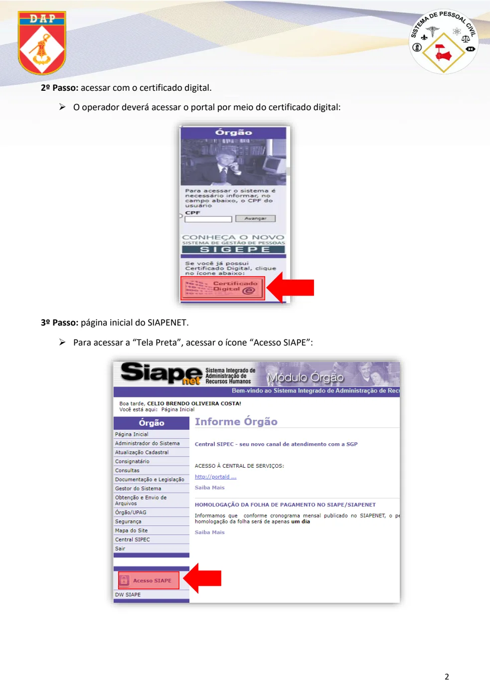
Tutorial de lançamento — anexo do caderno
PDF · p. 284º Passo: acesso à tela de comandos.
• Para realizar a concessão de abono, na tela de COMANDO, digitar a transação: “> CDISPSSABP”
e, depois, teclar “ENTER”:
5º Passo:
• Consultar o s dados do postulante ao benefício, digitando a matrícula SIAPE, ou nome
completo, ou CPF ou identidade única e confirme teclando “ENTER”.
Ver página original — tabelas, imagens e diagramas
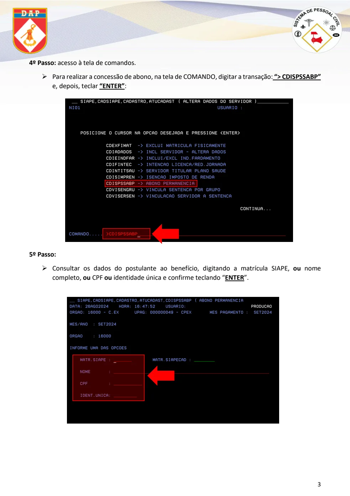
Tutorial de lançamento — anexo do caderno
PDF · p. 296º Passo:
• Selecionar com “X” o beneficiário e teclar “ENTER”:
7º Passo:
• Na opção, “DESEJA CONTAR LICENÇA PRÊMIO POR ASSIDUIDADE (LPA) EM DOBRO”, de acordo
com a informação contida no mapa de tempo de serviço, digitar “ S” (sim) ou “ N” (não) e
confirmar teclando “ENTER”. Somente digitar “S” (sim) se a contagem de LPA em dobro constar
na portaria. Caso a resposta seja sim, seguir os procedimentos que se iniciam no “10º passo”.
000555
333000
111555
999888
777777
666888
111222
444333
989898
747474
855865
212131
515356
454648
00000555
000555
Ver página original — tabelas, imagens e diagramas
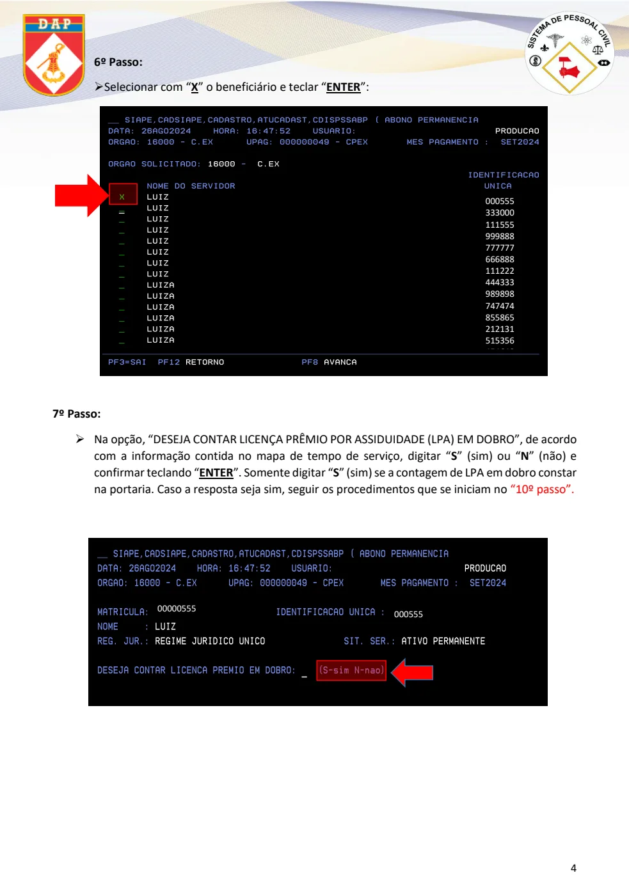
Tutorial de lançamento — anexo do caderno
PDF · p. 308º Passo:
• Se a resposta da tela anterior foi “N” (não), surgirá a tela abaixo, onde o operador deve registrar
o “grupo/ocorrência”, o “inicio ocorrência ” e o ”fundamento legal ”, conforme informações
contidas na portaria de concessão de abono de permanência do servidor:
• Ao clicar no “ F1”, será aberta a TABELA DE OCORRÊNCIAS, que permite a pesquisa de
todos os grupos de ocorrências. Com o resultado, o operador deverá escolher e
selecionar a ocorrência conforme publicação da portaria de abono. Após a seleção, tecle
“ENTER”.
00000555
000555
Ver página original — tabelas, imagens e diagramas
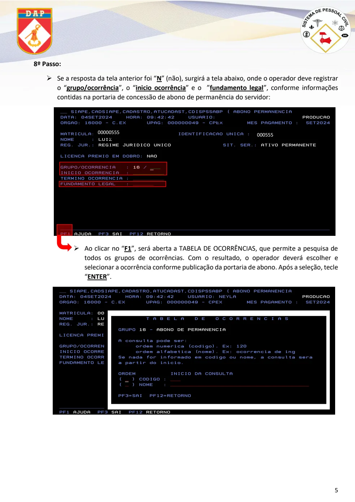
Tutorial de lançamento — anexo do caderno
PDF · p. 31ATENÇÃO! No grupo 010 e suas respectivas ocorrências, encontram -se as fundamentações
anteriores à Emenda Constitucional nº 103 (EC 103).
Nos grupos 011 e 012 encontram-se os fundamentos da EC 103, conforme tela exemplificativa
abaixo.
ATENÇÃO! Vale ressaltar que o referido sistema não está parametrizado para a
implantação de datas de ocorrências anteriores à publicação da EC 103. Por conseguinte,
orienta-se implantar a data da referida EC (13 Nov 2019) e efetuar o pagamento do período
discriminado no texto da portaria através das modalidades de pagament o exercícios
anteriores ou pequena monta.
9º Passo
• Após o preenchimento dos dados, o operador deverá digitar “C” para confirmar a atualização
na folha de pagamento do servidor.
00000555 000555
Ver página original — tabelas, imagens e diagramas
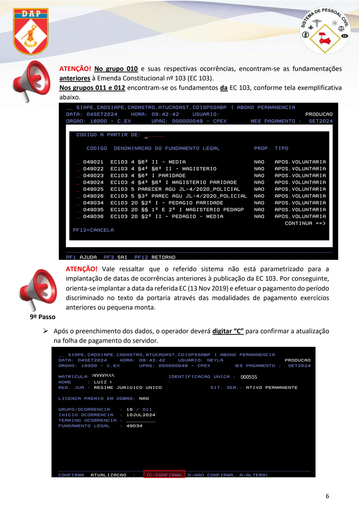
Tutorial de lançamento — anexo do caderno
PDF · p. 3210º Passo
• No 7º passo, se a resposta à pergunta “DESEJA CONTAR LICENÇA PRÊMIO POR ASSIDUIDADE
(LPA) EM DOBRO for “S” (sim), siga os próximos passos:
a) Insira o “S” no local indicado e tecle “ENTER”:
b) Marque com um “X” o período a ser utilizado para a base de cálculo na concessão da LPA.
Depois, tecle “ENTER”:
00000555
000555
00000555
000555
Ver página original — tabelas, imagens e diagramas
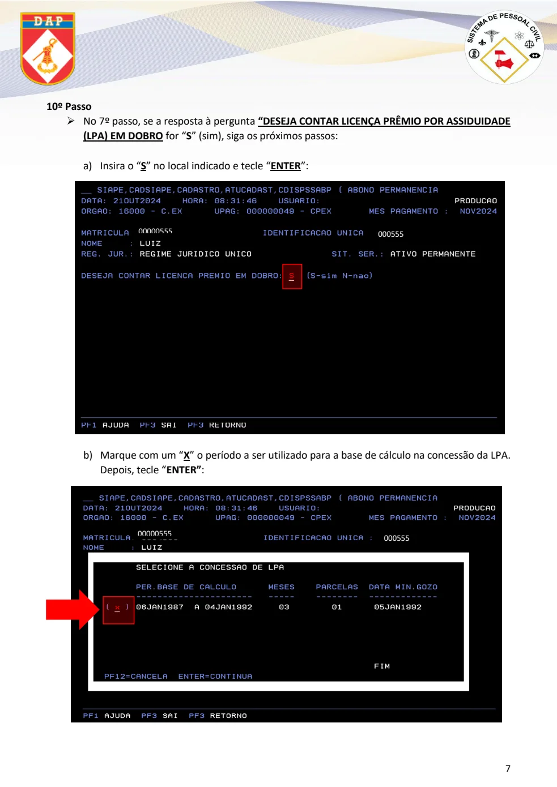
Tutorial de lançamento — anexo do caderno
PDF · p. 33c) De acordo com os dados da portaria, faça a inserção da quantidade de dias (1) a serem
transformados em abono e da data de concessão do abono (2). Depois, tecle “ENTER”
d) Após a inserção dos dados, insira a letra “S” para confirmar a transação. Tecle “ENTER”:
000555
1
2
000555
Ver página original — tabelas, imagens e diagramas
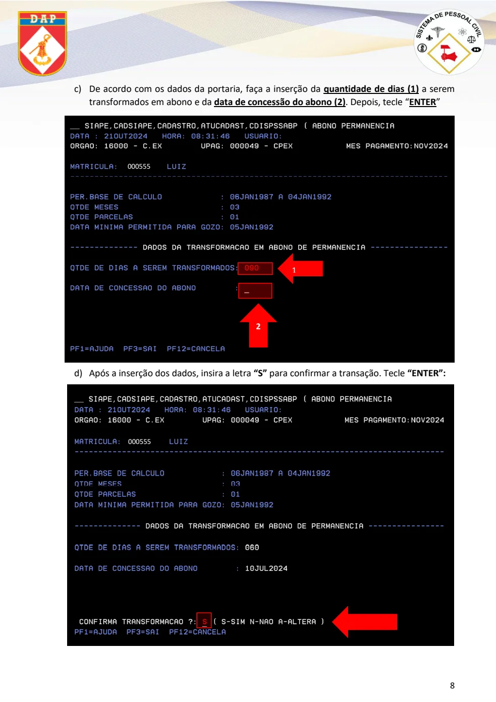
Tutorial de lançamento — anexo do caderno
PDF · p. 34e) Confira os dados da tela e, se estiver tudo correto, insira a letra “C” para confirmar e tecle
“ENTER”:
Se for constatado erro nos dados inseridos, você tem a opção de não confirmar (N – NÃO
CONFIRMA) ou alterar (A – ALTERA), conforme indicado na seta vermelha:
TAREFA CONCLUÍDA!
ELABORAÇÃO E AGRADECIMENTOS:
SUBSEÇÃO DE BENEFÍCIOS/SPC/DAP
APOIO DE CONTEÚDO E FORMATAÇÃO: SUBSEÇÃO DE
CADASTRO E ASSESSORIA TÉCNICA/SPC/DAP
OUTUBRO DE 2024
1ª Edição
00000555
000555
Ver página original — tabelas, imagens e diagramas
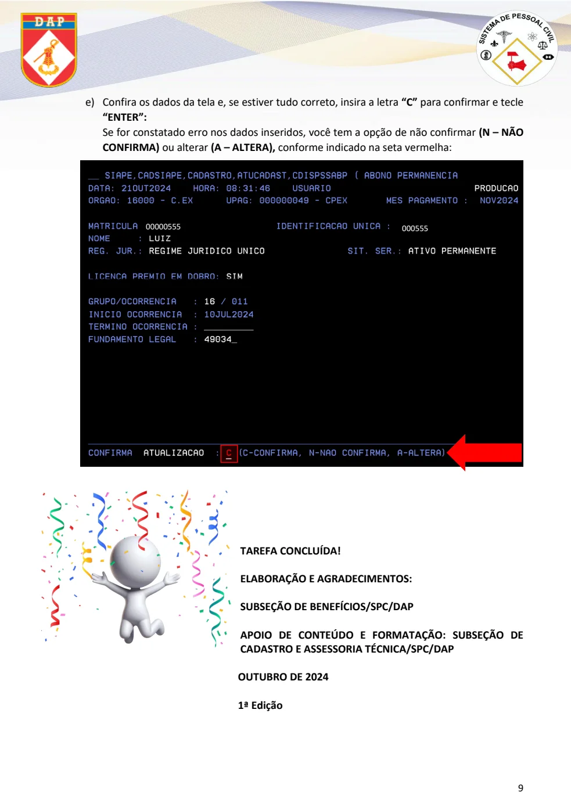